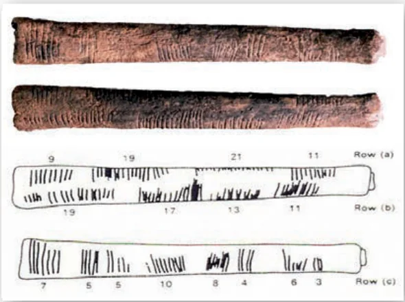

“I know numbers are beautiful, if they aren’t beautiful, nothing is” — Paul Erdos
Srinivasa Ramanujan was an Indian mathematical genius who was born in Erode in a poor family. He was a child prodigy and made calculations at lightning speed. He produced thousands of precious formulae, jotting them on his three notebooks which are now preserved at the University of Madras. With the help of several notable men, he became the first research scholar in the mathematics department of University of Madras. Subsequently, he went to England and collaborated with G.H. Hardy for five years from 1914 to 1919.
He possessed great interest in observing the pattern of numbers and produced several new results in Analytic Number Theory. His mathematical ability was compared to Euler and Jacobi, the two great mathematicians of the past Era. Ramanujan wrote thirty important research papers and wrote seven research papers in collaboration with G.H. Hardy. He has produced 3972 formulas and theorems in very short span of 32 years lifetime. He was awarded B.A. degree for research in 1916 by Cambridge University which is equivalent to modern day Ph.D. Degree. For his contributions to number theory, he was made Fellow of Royal Society (F.R.S.) in 1918.
His works continue to delight mathematicians worldwide even today. Many surprising connections are made in the last few years of work made by Ramanujan nearly a century ago.
Learning Outcomes
- To study the concept of Euclid’s Division Lemma.
- To understand Euclid’s Division Algorithm.
- To find the LCM and HCF using Euclid’s Division Algorithm.
- To understand the Fundamental Theorem of Arithmetic.
- To understand the congruence modulo ‘\(n\)’, addition modulo ‘\(n\)’ and multiplication modulo ‘\(n\)’.
- To define sequence and to understand sequence as a function.
- To define an Arithmetic Progression (A.P.) and Geometric Progression (G.P.).
- To find the \(n^{th}\) term of an A.P. and its sum to \(n\) terms.
- To find the \(n^{th}\) term of a G.P. and its sum to \(n\) terms.
- To determine the sum of some finite series such as \(\sum n\), \(\sum n^2\), \(\sum n^3\).
2.1 Introduction

The study of numbers has fascinated humans since several thousands of years. The discovery of Lebombo and Ishango bones which existed around 25000 years ago has confirmed the fact that humans made counting process for meeting various day to day needs. By making notches in the bones they carried out counting efficiently. Most consider that these bones were used as lunar calendar for knowing the phases of moon thereby understanding the seasons. Thus the bones were considered to be the ancient tools for counting. We have come a long way since this primitive counting method existed.
It is very true that the patterns exhibited by numbers have fascinated almost all professional mathematicians’ right from the time of Pythagoras to current time. We will be discussing significant concepts provided by Euclid and continue our journey of studying Modular Arithmetic and knowing about Sequences and Finite Series. These ideas are most fundamental to your progress in mathematics for upcoming classes. It is time for us to begin our journey to understand the most fascinating part of mathematics, namely, the study of numbers.